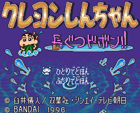

Crayon-shin - Sufami Turbo Games

Controls
- A button: Jump
- B button: [not used?]
- X button: [not used?]
- Y button: [not used?]
- L button: [not used?]
- R button: [not used?]
- Start: Pause
- Select: [not used?]
In this game, you fight against two opponents. You must jump onto water puddles to splash your opponents. This
damages them. I am not sure what the overall purpose of this game is.
Anime Video Game Resource Center © 1998 by Luis A. Cruz